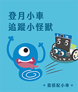
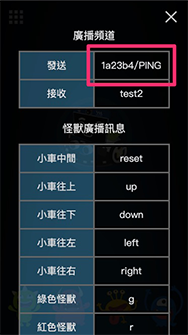

教学示例卡使用教学
教学示例卡是Web:AI为各教育单位提供的程序示例，只要使用开发板扫描QRcode，就能立即体验AI人工智能，并快速在课堂中进行示例演示。
教学视频
欢迎参考下方教学视频：
介绍
教学示例包含：
A.人脸追踪
B.语音互动
C.小怪兽追踪
D.口罩侦测
E.登月小车追踪小怪兽
F.万用遥控器控制登月小车
「登月小车追踪小怪兽」及「万用遥控器控制登月小车」示例需要搭配登月小车作使用。欢迎参考：MoonCar登月小车。

使用教学
1.使用Web:AI开发板进入QRcode模式
关于如何进入QRcode模式，欢迎参考：操作模式：QRcode模式教学。
2.拿出教学示例卡，翻到背面的QRcode。
3.使用Web:AI开发板的镜头扫描卡片上的QRcode。

5.扫描成功后即可应用教学示例。
A.人脸追踪
以人脸的五官来作为模型，经过机器学习后可以辨识出画面中的人脸。
不限定人脸数量，但可能会受到环境光照的影响而产生些许误差。

-关于人脸追踪，欢迎参考：人脸追踪积木。
B.语音互动
基于「语音辨识」的原理实现的语音互动，开发板中放入了男性、女性、Google小姐等语音，侦测到声音频率变化而做出对应的效果。

包含3种不同互动，只要对着Web:AI说出「你好吗？」、「自拍」、「你是谁？」，就会产生不同的互动效果
因为每个人的声音模型都不同，如果侦测不灵敏，可以使用Google小姐来说出指令。
1.你好吗？
LCD屏幕随机显示1只小怪兽及情绪，并通过麦克风发出对应的音效。
2.自拍
Web:AI开发板开启摄像镜头，对着自己拍一张照片并显示在LCD屏幕上。
3.你是谁？
梦想成为科技教具的Web:AI会自我介绍给大家听!
-关于语音辨识，欢迎参考：语音辨识积木。
C.小怪兽追踪
采用「物件追踪」的技术辨识并追踪4只小怪兽，根据画面中的小怪兽显示信息。

下载物件追踪模型时：
示例小卡使用的小怪兽模型是预设在开发板中的物件追踪模型，如果从图像训练平台下载物件追踪模型会将小怪兽模型覆盖。
若是要再次使用，就需要将开发板恢复固件。
-关于物件追踪，欢迎参考：四、训练图像分类、物件追踪。
-关于恢复固件，欢迎参考：初始化设定 ( 第一次使用请看这里 )。
D.口罩侦测
配合疫情时事，以人脸模型和配戴口罩的人脸模型做出的口罩侦测。
-当侦测到人脸配戴口罩，显示「安全!」。
-当侦测到人脸未配戴口罩，显示「危险!」。

-关于口罩侦测，欢迎参考：人脸追踪积木。
E.登月小车追踪小怪兽
登月小车结合「物件追踪」技术，辨识4只颜色的小怪兽，让魔幻LED发出相对应颜色的光，并且依据LCD屏幕中小怪兽的位置来控制登月小车的前进、左转、右转，让小车追着小怪兽行驶。

F.万用遥控器控制登月小车
想要直接操控登月小车吗？
「Webduino万用遥控器」可以直接滑动网页中的小车图案，用最简单的方式控制小车的移动。

操作步骤
1.使用Web:AI开发板扫描「万用遥控器控制小车QRcode」，进入「万用遥控器控制小车」模式。
进入后可以看到屏幕显示QRcode及「请用手机扫描」。

2.使用手机扫描屏幕上的QRcode，进入Webduino万用遥控器界面。
(也可以直接点击Webduino万用遥控器连接进入)

3.点击右上角菜单按钮，开启设定画面。

4.在「发送」字段输入DeviceID/PING。
(如：DeviceID为1a23b4，则是输入1a23b4/PING)

5.输入完毕后，点击右上角✕符号关闭，即可滑动中央的小车图案来操控小车移动。